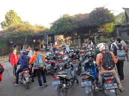

Parkir adalah sebuah kebutuhan mahasiswa yang sangat fundamental. Tanpa adanya parkiran, mahasiswa tidak bisa kuliah dengan tenang karena mungkin khawatir kendaraan miliknya hilang. Karena sangat penting, segala kebijakan mengenai parkir di kampus menjadi sorotan publik. Dengan perubahan kebijakan yang baru serta belum ada penelitian terbaru yang menggambarkan opini massa kampus perlu dilakukan penelitian. Sebagai catatan, penelitian ini bersifat informal dan tidak merepresentasikan lembaga apapun.
Parkir ITB, Visualisasi Data, Open Data, Data Science, Machine Learning, Data Driven Decission, User Experience, User Research, Human Centered Design, Design Thinking, Anti-disciplinary, < Yah.. pokoknya Tambahin sendiri istilah buzzword-nya disini.>
Permasalahan parkir ITB adalah permasalahan klasik yang sudah disadari sejak tahun 20071. Hingga tahun 2010, masalah tersebut belum selesai 2. Sebelum dikelola oleh ISS, parkir ITB dikelola oleh Koperasi Keluarga Pegawai ITB (KKP) dari tahun 2007 hingga Agustus 2010.3Sepanjang periode pengelolaan ISS, tarif parkir pernah naik sekali yaitu pada tanggal 3 februari 2014. Semula tarif parkir hanya 1000 rupiah/hari kemudian naik menjadi 2000 rupiah/hari4.
Terhitung tanggal 1 september 2016, pengelolaan parkir ITB berpindah dari ISS ke AutoPark. Tidak hanya itu, diberlakukan tarif baru seperti yang tertera pada gambar dibawah ini
Mengacu pada perhitungan diatas, jika terdapat mahasiswa yang parkir lebi dari 5 jam dan entah karena jalan macet /hujan/praktikum giliran malam hari/aktif di unit kegiatan mahasiswa seperti MBWG, jumlah tarif parkir yang harus dibayar adalah 5.000 + 10.000 (inap) = 15.000. Dengan kata lain biayanya meningkat 750% dari biaya semula yaitu 2.000 rupiah.
Sebenarnya kajian mengenai isu parkir itb sudah dilakukan sejak tahun 20135. Sayangnya penelitian data penelitian tersebut belum mendetail dan belum terbuka. Terinspirasi dengan penelitian oleh bang Anshor6 saya tergerak untuk melakukan penelitian sederhana ini.
Berdasarkan latar belakang diatas, penelitian informal ini memiliki tujuan mendapatkan opini terbaru dari massa kampus mengenai kebijakan parkir baru di ITB.
Dalam penelitian ini digunakan beberapa pertanyaan untuk mendapatkan opini massa kampus. Data didapatkan dari jawaban responden yang dikumpulkan sejak pukul 2 siang tanggal 1 september hingga pukul 6 pagi tanggal 2 september. Kuesioner dibuat menggunakan google form berisi 2 (dua) pertanyaan demografis, 5 (lima) pertanyaan tertutup dan 2 (dua) pertanyaan tertutup.
| Jenis Pertanyaan | Variabel | Pertanyaan | Urutan |
|---|---|---|---|
| Demografis | Tingkat Kuliah | Anda berumur? | 1 |
| Jenis Kelamin | Anda seorang? | 2 | |
| Tertutup | Frekuensi Berangkat ke kampus | Seberapa sering anda berangkat ke kampus? | 3 |
| Metode mencapai kampus | Bagaimana pergi ke kampus? | 4 | |
| Metode mencapai kampus | Bagaimana pergi ke kampus? | 5 | |
| Tempat Tinggal | Di mana anda tinggal? | 6 | |
| Opini thdp kebijakan baru | Apakah anda setuju thdp kebijakan baru? | 7 | |
| Perilaku parkir | Berapa lama anda parkir di kampus? | 8 | |
| Terbuka | Tarif layak parkir | Berapa tarif yang pantas? | 9 |
| Solusi Parkir | Apakah ada usulan solusi? | 10 | |
Kuesioner waktu disebarluaskan melalui media Google Spreadsheet, sehingga metode penentuan sampel pada studi ini bersifat accidental sampling, yang secara literal berarti sampel yang tidak sengaja ketemu, atau siapapun yang mau diminta/dirayu/dipaksa untuk mengisi kuesioner yang dijaring lewat media sosial. Terdapat 333 responden yang mengisi kuesioner, dengan perbandingan 253 orang responden laki-laki dan 80 orang responden perempuan.
Agar mudah dimengerti oleh kamu, kamu dan kamu, hasil pengolahan data disajikan dalam bentuk grafis, berupa pie chart.
Di bagian ini kamu akan melihat banyak visualisasi data dalam bentuk grafis. Ya, banyak. Kami membaginya ke dalam dua subbagian yaitu data primer dan data sekunder. Siapkan kaca pembesar, mata yang jeli, dan otak yang jernih untuk membacanya
Sebelum masuk ke data inti, mari kita lihat terlebih dahlu demografis pengisi kuesioner.
Meskipun data yang diterima tidak berimbang (imbalance data), setidaknya data tersebut merepresentasikan populasi mahasiswa itb yang didominasi oleh laki-laki. Adapun distribusi jumlah pengisi kuesioner yang paling banyak diisi oleh mahasiswa tingkat akhir / seterusnya disebabkan oleh faktor lingkungan penulis yang memang berada di tingkat akhir.
Selanjutnya, mari kita perhatikan data inti yang berkaitan dengan pendapat massa kampus mengenai parkir di ITB. terlihat bahwa frekuensi mahasiswa pergi ke kampus sangat tinggi, hampir setengah populasi mahasiswa pergi ke kampus 6-7 kali sepekan. Hal ini menunjukan bahwa kelompok mahasiswa tersebut aktif di berbagai kegiatan kampus (Unit Kegiatan Mahasiswa, Kabinet). Kelompok mahasiswa terbesar selanjutnya adalah mereka yang pergi ke kampus hingga 5 kali sehari. hanya sekitar 15 persen mahasiswa yang pergi ke kampus kurang dari 5 hari.
Dari data yang masuk, ternyata mayoritas pengisi kuesioner menggunakan motor sebagai kendaraan pribadi menuju kampus. lebih dari 3/4 responden meimilih kuesioner sementara 7.2 % menggunakan kendaraan umum. Mobil menjadi alternatif ketiga dengan persentase 6.9%. Sisanya, yang menggunakan sepeda / jalan kaki.
Jika dlihat sekilas, jumlah pengisi kuesioner hampir berimbang antara mereka yang tinggal di dekat kampus (Radius 2Km) atau yang jauh dari kampus (diluar 2Km).
Dan meskipun jumlah pengisi kuesioner tidak seluruhnya menggunakan kendaraan, 92.8% populasi menyatakan tidak setuju terhadap kebijakan baru ini. hanya ada 7.2 % yang menyatakan setuju.
Ditinjau dari lama parkir, hanya ada 3.3% populasi yang parkir kurang dari 5 jam. 39.5 % memarkirkan kendaraan lebih dari 5 jam dan pulang sebelum jam 9 malam (mungkin sekitar maghrib / isya). Sementara itu mereka yang parkir lebih dari 5 jam dan pulang mendekati / melewati jam 9 malam adalah mayoritas utama mahasiswa dengan 46.5%.
Bagaimana dengan usulan harga yang tepat ? Setelah merapihkan data, didapatkan beberapa hasil yang cukup mewakili suara mayoritas.
Perlu kesabaran ekstra untuk mengeliminasi data-data yang berisi cacian. Karena pertanyaanya pertanyaan terbuka dan berupa survey kualitatif mendapatkan beberapa insight menarik dari mereka. Saya memberikan penghargaan terhadap mereka yang mau menulis "essay" pada kolom sempit dalam kuesioner tersebut dan saya rasa cukup pantas unuk di-highlight. ada beberapa faktor yang menjadi pertimbangan selanjutnya dalam menentukan harga yang tepat :
Ada beberapa orang yang mengusulkan harga berdasarkan jarak dari rumah ke kampus. Jika dekat maka mahal, tapi kalau jauh sudah sewajarnya harus murah
Banyak yang keberatan dengan sistem per jam. Tarif flat selama affordable akan diterima.
Meskipun mayoritas mahasiswa setuju untuk menyatakan tidak ada biaya inap (flat price). Beberapa orang mencoba menghargai pekerjaan "ekstra" dari penjaga tukang parkir. Mereka setuju ada biaya inap dengan syarat-syarat tertentu seperti batas waktu dianggap meningap bukan jam 9.
Ada juga yang mengusulkan maksimal kenaikan relatif hanya 50% dari harga semula.
Meskipun hanya 1 orang ,ada juga yang mengusulkan penggunaan sistem hari-an dimana pada hari-hari tertenu, misal senin-rabu-jumat harga parkir adalah normal sementara selasa-kamis dst menjadi sedikit lebih mahal.
Siapa sih yang gak pingin gratis ? saya juga mau kalau gratis :))
Bagaimana dengan usulan solusi ? Karena jawaban pertanyaan ini adalah jawaban yang paling "essay" dibandingkan pertanyaan yang lain, saya hanya bisa merangkum beberapa kluster utama yang tidak berisi cacian. Berikut ringkasanya :
Seperti balubur town square, meskipun lahan parkirnya sempit tapi karena dibuat bertingkat kapasitasnya bertambah cukup banyak.
Ibarat UI yang memiliki bis kuning, sebagian orang berpendapat akan sangat seru jika ada bis yang muter di sekitar itb bolak balik setiap 15 menit-30 menit antara daerah kosan mahasiswa dengan kampus.
Sebelumnya sudah ada gerakan NebengYuk!, jadi bisa ikut bareng temen ke daerah kosan. Kekuranganya, tentunya tidak nyaman jika kita asal nebeng orang yang tidak kita kenal.
Pembatasan penggunaan kendaraan untuk mereka yang tinggal di dalam radius 2km melalui peraturan / kenaikan tarif.
Seperti UGM, ada juga beberapa orang yang berpendapat agar bisa parkir ke dalam kampus.
Sudah cukup jelas.
Well, ini agak ekstrim sih karena pasti ada kaitanya dengan pemerintah daerah.
Ini usulan paling positif dan tidak mengandung cacian. Tentunya mereka juga meminta pihak rektorat untuk menyediakan fasilitas berupa penitipan sepeda. Ada juga yang curhat bahwa sebenarnya dulu mereka menggunakan sepeda, tapi semenjak sepeda mereka hilang 3 kali mereka jadi kapok naik sepeda.
Oke... ini super keren, tapi faktanya, tahukah kamu bahwa sebenarnya KTM yang kamu pegang meskipun udah bulukan atau tinggal warna putih ada data nomor induk mahasiswa yang tersimpan di dalamnya ? Silahkan download NFC reader dari googleplay, tempelkan KTM kamu ke hapemu (tentunya hapemu harus memiliki fitur NFC reader). Ada yang mengusulkan jika KTM lebih difungsikan dengan membuat sensor NFC reader untuk akses masuk ke dalam parkir kampus. Informasi jarak rumah didapatkan dari data induk mahasiswa berdasarkan nim yang ada di dalam NFC. Tentunya, perlu diperhatikan aspek keamanan informasi karena mugkin informasi NFC mudah dimanipulasi :)
Sulit sih.. tapi ada juga yang ngusulin seperti ini
Nah lo, saya sih bukan TPB, gak punya mobil lagi.
Dulu semenjak saya TPB, pintu parkir utara dibuka. Sejak pembangunan ITB yang entah sampai kapan berakhir pintu utara belum dibuka lagi hingga saat ini. Kapankah pintu utara akan dibuka ? semuanya masih menjadi misteri.
Nah ini dia, sayangnya kapasitas asrama yang ada pun juga terbatas.
Dari data-data tunggal di atas, kami mencoba melihat pola yang muncul dengan membenturkan dua atau lebih variabel sekaligus.
Ada fakta yang tidak mencengangkan dari data diatas. Ternyata, dari 256 pengendara motor di kampus, 113 diantaranya memiliki tempat tinggal dalam radius 2 Km dari kampus. Hanya ada 3 responden yang memiliki mobil dan tinggal di dalam radius 2km dari kampus.
Meskipun mayoritas menyatakan tidak setuju, ada juga mereka yang memiliki kendaraan yang menyatakan kesetujuanya terhadap aturan baru. Uniknya, mereka yang tidak membawa kendaraan ke kampus (Jalan Kaki/Naik Angkot) pun juga menyatakan ke-tidak setujuanya terhadap kebijakan baru ini.
Apakah ada hubungan bahwa semakin tua, semakin santai kuliahnya artinya semain jarang ke kampus ? Atau justru semakin muda semakin luang waktunya sehingga tidak perlu ke kampus di akhir pekan? Tentunya agak sulit melakukan deduksi jawaban apa yang paling tepat untuk pertanyaan diatas karena data yang digunakan tidak berimbang (imbalance data). Tapi, biar bisa menggambarkan distribusinya, saya kelompokan saja berdasarkan angkatan (toh datanya juga memang imbalance)
Ada masih banyak hubungan antar variabel yang bisa diteliti. Hubungan antar variabel lainya akan saya update setelah saya menyelesaikan deadline tugas agak akhir saya.
Minimnya sosialisasi mengenai kenaikan harga parkir membuat mahasiswa menjadi gerah. Sebagai akibatnya, pada tanggal 2 september mereka demo di depan gerbang kampus. 
Ada beberapa efek domino saat harga parkir bertambah, saya coba rangkum sekilas dari berbagai data masukan yang masuk :
Beberapa kegiatan kemahasiswaan seperti MBWG melakukan latihan di malam hari. Tidak hanya kegiatn mahasiswa, beberapa ujian / praktikum anak teknik mesin juga dilakukan di malam hari.
Karena harga yang mahal, parkir liar pun mulai bertambah marak. Sudah menjadi pengetahuan bersama tentang "alternatif-alternatif" parkir di sekitar kampus.
Ya, ada juga yang menulis di dalam kolom masukan jika harganya memang mahal mungkin saja dia yang semula memiliki rumah cukup jauh (sebut saja soreang,ujung berung, atau cimahi) akan mempertimbangkan untuk memilih kost di dekat kampus. Sayangnya saya ragu ngekos akan menjadi alternatif yang menyelesaikan karena bagaimanapun juga jumlah kosan di sekitar kampus pun pasti ada batasnya.
Dulu saya pernah dengar ada ide untuk membangun parkir basement di parkiran seni rupa. tapi entah hanya isu sekilas / angin berlalu, sampai sekarang belum terlaksana. Di luar itu semua, jikalau memang dilakukan pembangunan gedung parkir baru akan ada masalah lain seperti pendanaan gedung baru, lokasi gedung parkir dst. Perlu kajian yang lebih serius dibandingkan kajian lawak seperti tulisan ini.
Bagaimanapun juga kampus harus menyediakan fasilitas yang layak untk mahasiswa. Di lain pihak, mahasiswa juga harus sadar terhadap permasalahan lahan parkir yang terbatas. Alih-alih protes ke pihak rektorat, mari mulai bijak dengan menjadi bagian solusi menggunakan alternatif-alternatif lain untuk pergi ke kampus. Misalnya menggunakan sepeda, sepeda listrik kalau cukup jauh dan mau terlihat sedikit lebih cinta lingkungan ...atau.. jika kamu ingin mencoba agar terlihat lebih ksatria gunakan saja kuda. #HorseToCampus #SelfDrivingHorse Yiihaa..
Katanya harga parkir udah balik lagi ke normal. Alhamdulillah.